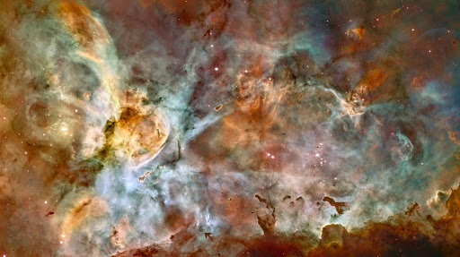
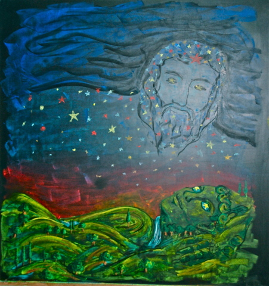
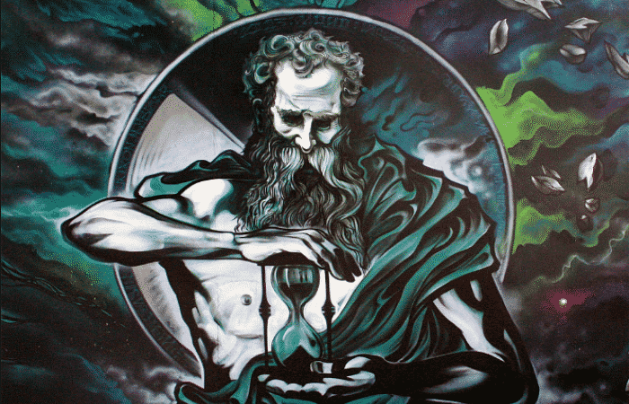
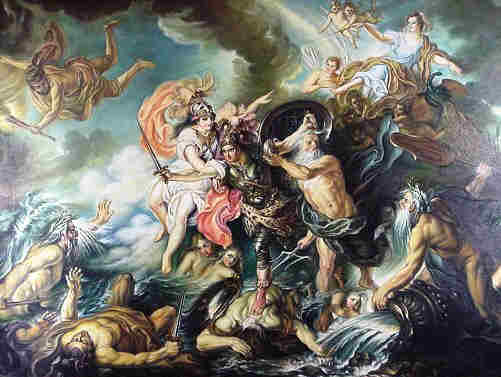
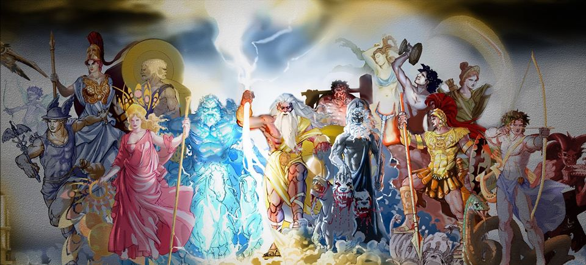

Antes del inicio del mundo, existía el Caos, este ser representaba el vacío o la nada. De él emergieron los dioses primigenios, seres divinos que se encargaron de dar forma al mundo.
El primer ser, se conoció como Gea y era una diosa primigenia, que representaba la tierra, a su vez también nació Tártaro, este último era un ser de tamaño descomunal que tomo forma del subterráneo o del abismo del planeta, estando por debajo del inframundo, su función fue la de servir de prisión para condenados.
Luego le siguió Nix, quien era una diosa que representaba la noche y Érebo, un dios que se identificaba con la oscuridad.
También el Caos dio como último origen a la divinidad Eros, este representa el deseo y el amor.
Estas deidades siguieron creando los moldes del mundo y es así como Nix y Érebo, procrearon a Éter y a Hémera, el primero era el aire y la segunda el día, pero no todas fueron correctas, también dieron origen a representaciones funestas, como Tánatos (La Muerte Natural), Hipno (El Sueño), Moro (La Condena), Oniro (Los Sueños), Momo (La Culpa), Filotes (El Afecto) Némesis (La venganza), Ezis (La Angustia), Eris (La Discordia) y Geras (La Vejes), Apate (La Falsedad), Caronte (Transportador de Almas) y por último Las Keres y Moiras (mujeres que representaban la muerte violenta y la destrucción, además de la adivinación).
Las relaciones consanguíneas siguieron y Gea procrea junto con Tártaro, a un hijo llamado Tifón, este sería la tempestad y dos hijas, una ninfa llamada Echidna y Campe, estos eran bestias humanoides.
La madre tierra, al igual que Caos, pudo dar a luz a nuevos seres sin necesidad de tener una pareja y es así como de ella nace Ponto, quien sería el mar y Ourea, quien se convertiría en las montañas, pero esto no termino allí, también dio a luz a Urano, con quien establecería una nueva generación.
La Madre Tierra dormía cuando dio a luz a Urano, quien se convirtió en el Cielo, llegó Derramando una lluvia fértil sobre la Tierra, esto ocasionó que estas dos divinidades se unieran.
Gea y Urano tuvieron numerosa descendencia, esto comenzó cuando Urano dominó el mundo, se convirtió en su esposo y juntos tuvieron dieciocho hijos, convirtiéndose en la primera generación de Dioses y Monstruos, estos dioses fueron conocidos como Titanes.
Sus primeros hijos fueron los Hecatónquiros, seres gigantescos de forma semihumana que poseían cien brazos. Estos recibieron los nombres de Briareo, Giges y Coto, Después, Gea dio a luz a los Cíclopes, llamados Brontes, Estéropes y Arges. También eran de gran tamaño pero su principal característica era la presencia de un único ojo en el centro de su frente y por último nacieron los Titanes, Océano (El Mar), Ceo (La inteligencia) , Hiperión (Luz Celestial), Crío (Rebaños y Manadas), Japeto (Mortal Vida) y Cronos (Tiempo); y las Titánides Tía (Visión), Rea (Cavernas y Naturaleza), Temis (Justicia y Equidad), Mnemosine (Memoria), Febe (Sabiduría) y Tetis (Aguas dulces).
Urano comenzó a obsesionarse con el reinado y al ver que sus descendientes habían heredado su poder, presintió que en algún momento su trono se veria amenazado por uno de sus hijos por lo que éste, para evitar que le arrebatasen el poder, encerró a los Hecatónquiros y a los Cíclopes en el Tártaro, además hizo permanecer a los hijos que aún estaban por nacer en el vientre de su madre.
Pero esto cambió cuando llegó el día en que Gea, no pudiendo aguantar más el dolor que esto le causaba, convenció a los Titanes para que castraran a su padre. Ésta labor quedó en manos del menor de todos, Cronos. Con una hoz que le había entregado su madre y mientras sus hermanos Ceo, Hiperión, Crío y Japeto lo sostenian, cortó los genitales y los arrojó al mar.
Tras la derrota de Urano, los Titanes liberaron a sus hermanos del Tártaro y entregaron el poder a Cronos.
Posterior a la mutilación, los Titanes y Titánides continuaron dejando descendencia y es así como Óceano y Tetis, procrean a las Óceanides, estas se convirtieron en todos los ríos del mundo, siendo un total de mas de tres mil retoños, pero entre todas ellas resaltaban Metis(Astucia y Prudencia), Pleyone y Climene.
Esta última se casó Japeto, hermano de su padre y tuvieron cuatro hijos, Atlas, quien era el más fuerte de todos, Menecio era el que actuaba sin pensar, Epimeteo, el de pensamiento tardío y Prometeo el que actuaba inteligentemente.
Febe y Ceo continuaron con dos hijas y un hijo, la primera fue Leto, la diosa de la luz del día, le siguió Asteria, identificada con las estrellas fugaces y Lelanto como el dios de la invisibilidad.
Tía se casó con Hiperión y dieron a luz a tres hijos, Helio, dios del sol, Selene, diosa de la luna y Eos, diosa de la Aurora.
Mnemosine fue la única que se mantuvo soltera durante este periodo, mientras tanto, Cronos el menor de los hijos Titanes de Gea y que a todos superaba en el arte del engaño y la malicia, se autoproclamaba amor y señor de todo.
Con todo este poderío, a sus hermanos les obligó a servirle como guardianes de su trono y los hermanos no tuvieron más remedio que obedecer, al no haber representante del cielo, Cronos condena a los hermanos que le ayudaron con su padre, a sostener el cielo, quedando de la siguiente manera, en el Norte se encuentra Ceo, por el Sur Crío, en el este Japeto y por el oeste Hiperión.
Cuando Cronos se asentó como dios y Titán supremo absoluto del mundo, tomó por esposa a la Titánide Rea, su hermana, pero antes recibió un mensaje de su padre Urano, quien probablemente para vengarse de haber quedado castrado e inútil, le profetizó que a su vez seria desposeído del trono por uno de sus hijos.
Así Cronos se transformó en un monarca mucho más despótico de lo que había sido el propio Urano, por tal razón, al ver las capacidades de sus hermanos y sentir un fuerte despreció por los Hecatónquiros y Gigantes, asi que los condenó al Tártaro y los dejo bajo la custodia de la monstruosa carcelera Campe.
Pero esto no fue suficiente, a fin de neutralizar la predicción de su padre, fue devorando sucesivamente a todos sus hijos en el orden que fueron naciendo, comenzando con Hestia, Deméter y Hera, quienes eran las féminas y posteriormente continuo con los varones Hades y Poseidón.
Rea, furiosa por el proceder de su marido, se dejó aconsejar por su madre Gea, y cuando quedó embarazada del último se marchó a escondidas a Creta y en una cueva profunda del monte Dichti dio a luz a Zeus.
A Cronos le dio una piedra envuelta en pañales y este, sin mirar, se la tragó pensando que se había desembarazado de su último retoño, de esta forma Zeus tenía la oportunidad de crecer lejos de la tiranía de su padre.
Zeus creció al cuidado de las ninfas y de la cabra Amaltea, esta cabra lo alimenta hasta el día en el que alcanza la mayoría de edad y tiene la fuerza suficiente para enfrentarse a su padre y liberar a sus hermanos.
Su madre le fue inculcando su destino hasta la adultez y es así cuando llega el momento de consumar su venganza, como primer paso visita a su prima Metis, quien era hija del Titán Océano y la Titánide Tetis, esta le aconseja unirse a la corte de su padre.
Se convierte en un copero, siendo su trabajo el servirle el vino al soberano Titán, de esta forma inicia el complot con la Óceanide Metis, quien le entrega una pócima, la cual es servida en una de las copas que bebe su padre, haciendo que vomite a todos sus hermanos devorados, siendo la piedra del engaño la primera en ser expulsada.
Zeus escapa con sus hermanos y comienza a organizar un plan para derrocar a Cronos, su siguiente paso fue liberar su tíos, los Hecatónquiros y los Cíclopes, matando a la guardiana Campe, quien era la carcelera del Tártaro, donde se encontraban aprisionados, este los convence y forma alianzas con algunos titanes, para que luchasen a su lado, estos eran hermanos de su padre, quienes habían cambiado de bando. A este conflicto se le conoció como la Titanomaquia y se prolongó durante diez años, ocasionando que los cimientos de la tierra temblaran.
En la batalla tomaron partido la mayor parte de los titanes, así como sus descendientes, con la excepción del mayor de los Titanes, Océano, quien se mantuvo en una posición neutral, sin embargo su hija Metis confabulo con Zeus.
Prometeo toma el bando neutral junto con su hermano Epimeteo, pero el primero comparte sus dones oculares con Zeus, al igual que lo hace la Titánide Temis. Helios es otro Titán que prefiere no participar en la guerra, todos son primos del dios.
Cronos encabezaba a los Titanes, acompañado por Ceo, Crío, Hiperión, Jápeto, su hijo Atlas, y Menecio, estos establecen su propio campamento, los Titanes eligen el Monte Otris, mientras que Zeus y sus aliados se instalan en el monte Olimpo, por ende para mostrar su gratitud, los Cíclopes al ser excelentes herreros, fabrican armas hechas para dañar a los dioses, entre esto regalos se encuentran el rayo de Zeus, el tridente de Poseidón y un yelmo para Hades con el cual se hace invisible, este último permitió dar fin a la batalla.
Hades consiguió volverse invisible para robar las armas de Cronos mientras Poseidón lo mantenía distraído, para ser después totalmente derrotado por los rayos de Zeus, una vez caído Cronos, los Hecatónquiros comenzaron a arrojar piedras sobre los Titanes hasta sepultarlos completamente, luego fueron enviados al Tártaro donde fueron custodiados por estos.
Debido a la ausencia de los hermanos de Cronos y que el cielo se estaba derrumbando, se le encomendó a Atlas como castigo sostener el peso del mismo sobre su espalda por toda la eternidad, mientras que el Titán Océano, al igual que Prometeo y su hermano fueron recompensados y reconocidos por su ayuda, además se les dio libertad a las Titánides Tía, Rea, Temis, Mnemósine, Febe y Tetis, que se mantuvieron neutrales.
La cabra Amaltea fue recompensada por el dios y por ello se le denominó la constelación de Capricornio.
Al concluir la batalla, los dioses se situaron en el Monte Olimpo y desde allí, Zeus se encarga de organizar la morada de los dioses, es así como comienzan a repartirse las funciones principales, Hades es el asignado a gobernar el inframundo y el mundo de los muertos, Poseidón hereda los mares y Zeus se queda con el reino de los cielos.
Pese a que los tres tenían la misma igualdad de poder, Zeus es honrado con una tarea adicional, la de gobernar sobre el resto de dioses, de esta manera Zeus sucede a su padre y comienza una nueva generación de dioses, conocidos como los Olímpicos.
®Unixwebs - La Trininidad Mitológica - 2020